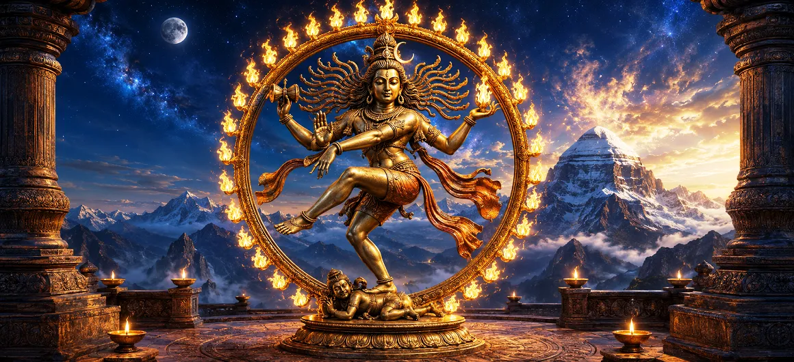

Nataraja
নটরাজ
नटराज
Nataraja is Lord Shiva revealed as the Cosmic Dancer. Within a radiant circle of flames, Mahadeva dances with tremendous energy while remaining perfectly balanced and serene. The image gathers creation and dissolution, movement and stillness, fear and refuge into one unforgettable sacred form.
डमरू से सृष्टि का कंपन सुनाई देता है; लौ परिवर्तन और विघटन की घोषणा करती है। एक हाथ कहता है "डरो मत," जबकि दूसरा हाथ शरण के उठे हुए पैर की ओर इशारा करता है। शिव के नीचे अपस्मार, अज्ञानता का प्रतीक है, जो दर्शाता है कि मुक्ति के लिए भ्रम को जागरूकता के तहत लाने की आवश्यकता है।
नटराज के छह पवित्र तत्व
आग की अंगूठी
ज्वलंत प्रभामंडल ब्रह्मांड, दिव्य ऊर्जा और समय के निरंतर चक्र को उजागर करता है।
डमरू
पवित्र ड्रम मौलिक कंपन छोड़ता है जिससे सृजन और लय उत्पन्न होती है।
विघटन की ज्वाला
अग्नि थके हुए रूपों को समाप्त करती है और परिवर्तन, शुद्धि और नवीकरण को संभव बनाती है।
अभय मुद्रा
उठी हुई हथेली भक्त को सुरक्षा का आश्वासन देती है: स्थिर रहो और डरो मत।
पैर उठाया
उठा हुआ पैर शरण, अनुग्रह और आध्यात्मिक बंधन से मुक्ति का प्रतीक बन जाता है।
अपस्मारा
शिव के नीचे की आकृति अज्ञानता और चेतन प्रभुत्व के तहत रखे गए भ्रम का प्रतिनिधित्व करती है।
शिव के ब्रह्मांडीय नृत्य को समझना
शिव, नृत्य के अधिपति
नटराज नाम का अर्थ है भगवान या नृत्य का राजा। यह रूप विशेष रूप से दक्षिण भारत की पवित्र कला और शैव परंपराओं में मनाया जाता है। परिपक्व कांस्य छवि, गहन भक्ति दर्शन के साथ परिष्कृत कलात्मक आंदोलन से जुड़कर, चोलों के तहत प्रसिद्ध हो गई।
शिव का नृत्य शक्तिशाली है लेकिन अनियंत्रित नहीं है। उनकी उड़ती हुई जटाएँ और झुके हुए अंग अत्यधिक गति दर्शाते हैं, फिर भी उनका चेहरा शांत रहता है। नर्तक पूरी तरह गति में है जबकि सबसे गहरा केंद्र स्थिर रहता है।
ब्रह्मांडीय अग्नि का चक्र
नटराज आग की लपटों के गोलाकार प्रभामंडल के भीतर नृत्य करते हैं। वृत्त की कोई विशेषाधिकार प्राप्त शुरुआत या अंत नहीं है और इसलिए यह चक्रीय समय को उद्घाटित करता है: संसार उत्पन्न होता है, कायम रहता है, रूपांतरित होता है और वापस लौटता है। अग्नि ऊर्जा और शुद्धि दोनों के रूप में नृत्य को घेर लेती है।
यद्यपि शिव ज्वाला से घिरे हुए हैं, फिर भी वे ब्रह्मांड से नहीं फंसे हैं। वह इसके केंद्र में जागरूकता है और उसकी लय के माध्यम से व्यक्त की गई बुद्धिमत्ता है। यह छवि निरंतर परिवर्तन के बीच साहस को आमंत्रित करती है।
हाथों की पवित्र भाषा
नटराज के ऊपरी दाहिने हाथ में डमरू है, जिसकी मौलिक ध्वनि सृजन की घोषणा करती है। ऊपरी बाएँ भाग में अग्नि है, वह ज्वाला है जो विलीन हो जाती है। सृजन और विनाश एक साथ होते हैं, जिससे पता चलता है कि प्रत्येक एक बड़े पवित्र चक्र से संबंधित है।
निचला दाहिना हाथ अभय मुद्रा बनाता है, जो सुरक्षा और भय से मुक्ति का वादा करता है। निचला बायां हाथ आंख को उठे हुए पैर की ओर खींचता है, और परेशान साधक को शरण और अनुग्रह की ओर निर्देशित करता है।
पैर, शरण और अपस्मार
शिव का सहायक पैर आध्यात्मिक अज्ञान और भ्रम के अवतार, बौने जैसे अप्सरा पर दबाव डालता है। अज्ञानता को नृत्य का निर्देशन करने की अनुमति नहीं है। यह जागृत चेतना की स्थिरता के नीचे नियंत्रित है।
दूसरा पैर स्वतंत्र रूप से उठता है। यह भ्रम और बंधन से परे मुक्ति की संभावना प्रदान करता है। एक साथ पैर दो आवश्यक गतिविधियाँ सिखाते हैं: अज्ञानता पर काबू पाना चाहिए, और आत्मा को अनुग्रह की ओर मोड़ना चाहिए।
पाँच दिव्य कृत्य
शैव व्याख्या अक्सर नटराज को पाँच दिव्य गतिविधियों को व्यक्त करने के रूप में देखती है: सृजन, संरक्षण, विघटन, छिपाव या आवरण, और अनुग्रह या मुक्ति। इसलिए यह छवि एक क्षण की नहीं बल्कि ब्रह्मांड और आध्यात्मिक जीवन के प्रकट होने की संपूर्ण दृष्टि है।
सृजन अनुभव को सामने लाता है; संरक्षण इसे कायम रखता है; विघटन इसके पूर्ण रूपों को साफ़ करता है; छिपाना सीमित अनुभव की अनुमति देता है; और अनुग्रह सीमा से परे का रास्ता खोलता है। ये पाँचों शिव के नृत्य से संबंधित हैं।
हृदय के भीतर का नृत्य
ब्रह्मांडीय नृत्य का आंतरिक चिंतन भी किया जा सकता है। विचार, भावनाएँ और पहचान जागरुकता के भीतर गति की तरह उत्पन्न होती हैं और गुजरती हैं। उनकी गतिविधि के नीचे एक साक्षी शांति है जिसे परिवर्तन द्वारा नष्ट करने की आवश्यकता नहीं है।
अपने भीतर नटराज को खोजने का अर्थ अज्ञान के सामने समर्पण किए बिना जीवन में पूरी तरह से भाग लेना है। भक्त शिव के निर्भय केंद्र में बार-बार लौटते हुए कार्य करता है, सृजन करता है और रूपांतरित होता है।
नटराज भक्त को क्या सिखाते हैं?
गति में स्थिरता
जब जीवन ऊर्जावान भागीदारी की मांग करता है तब भी आंतरिक रूप से केंद्रित रहें।
निडरता
अभय मुद्रा साधकों को याद दिलाती है कि सच्चे प्रयास के साथ दैवीय सुरक्षा भी मिलती है।
परिवर्तन की स्वीकृति
सृजन और प्रलय एक दूसरे से जुड़े हुए आंदोलन हैं, पृथक शत्रु नहीं।
अज्ञान की महारत
जागरूकता को आवेग, भ्रम और अहंकार की विकृत दृष्टि का मार्गदर्शन करना चाहिए।
अनुग्रह में शरण
उठा हुआ पैर आशा प्रदान करता है कि भक्ति के माध्यम से बंधन को पार किया जा सकता है।
पवित्र संतुलन
एक एकीकृत जीवन में शक्ति और शांति, क्रिया और चिंतन को धारण करें।
"नटराज हमें बिना किसी डर के परिवर्तन के माध्यम से आगे बढ़ना, अज्ञानता पर काबू पाना और हर नृत्य के केंद्र में शिव की स्थिर उपस्थिति की खोज करना सिखाएं।"
अक्सर पूछे जाने वाले प्रश्न
नटराज का क्या मतलब है?
नटराज का अर्थ है भगवान या नृत्य का राजा और यह शिव के दिव्य ब्रह्मांडीय नर्तक के रूप में प्रसिद्ध रूप को संदर्भित करता है।
नटराज के चारों ओर आग का घेरा क्या दर्शाता है?
ज्वलंत प्रभामंडल ब्रह्मांड, दिव्य ऊर्जा और समय, सृजन, परिवर्तन और विघटन के निरंतर चक्र का प्रतिनिधित्व करता है जिसके भीतर शिव नृत्य करते हैं।
नटराज के पैर के नीचे की आकृति कौन है?
बौने जैसी आकृति अपस्मार है, जो आध्यात्मिक अज्ञानता और भ्रम का प्रतिनिधित्व करती है। शिव का पैर अज्ञानता को रोकता है जबकि उनका उठा हुआ पैर शरण और मुक्ति प्रदान करता है।
नटराज द्वारा व्यक्त पाँच दिव्य कृत्य क्या हैं?
शैव व्याख्या नटराज को सृजन, संरक्षण, विघटन, छिपाव या पर्दा, और अनुग्रह या मुक्ति से जोड़ती है।